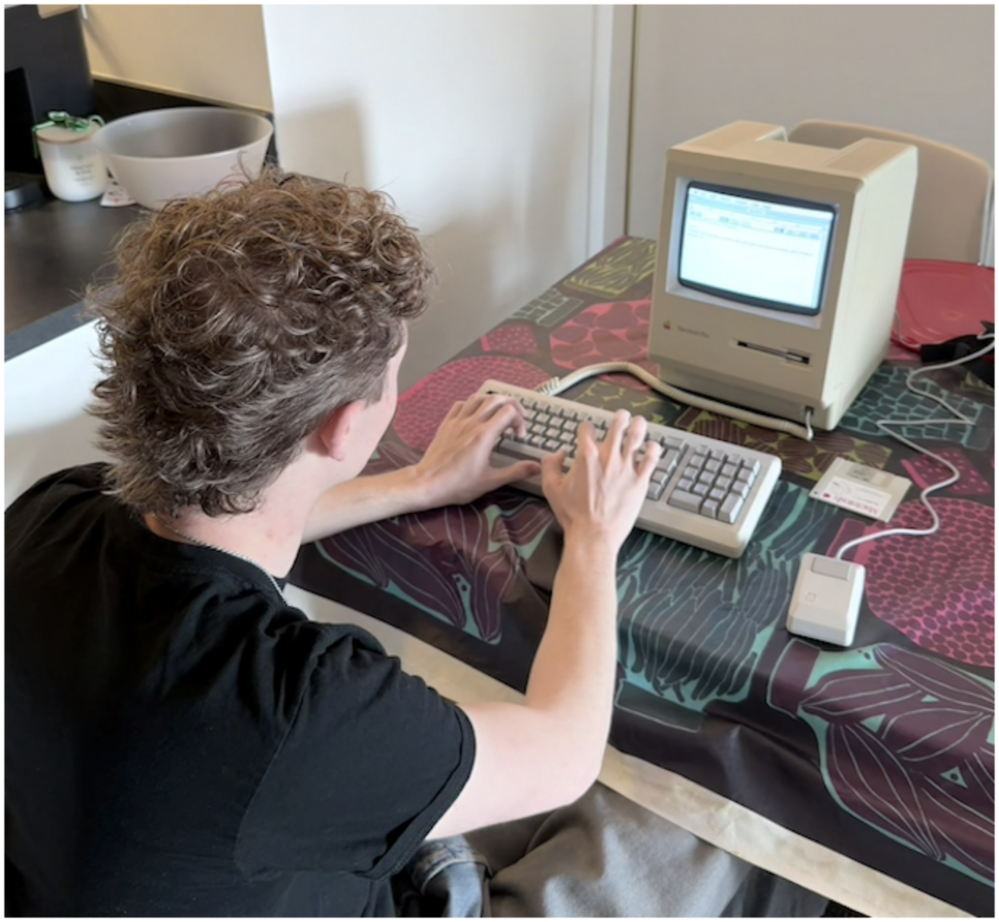
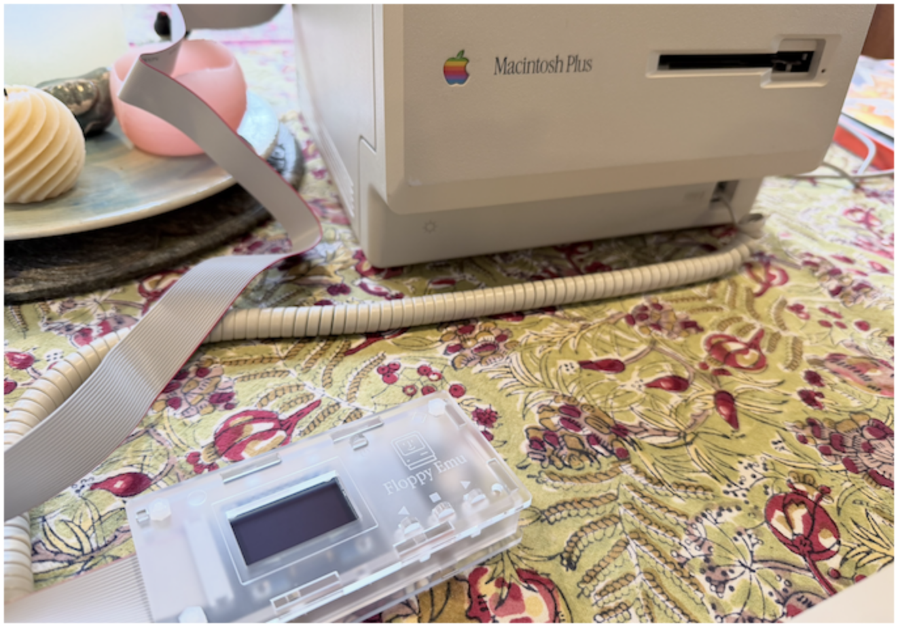
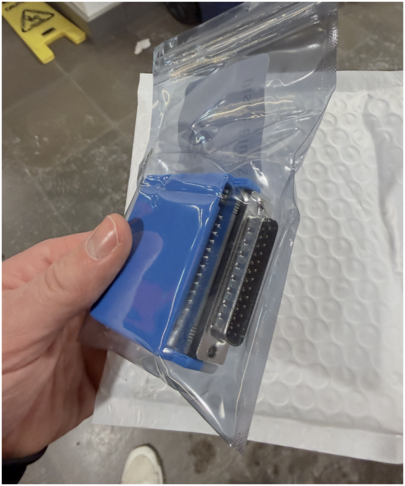
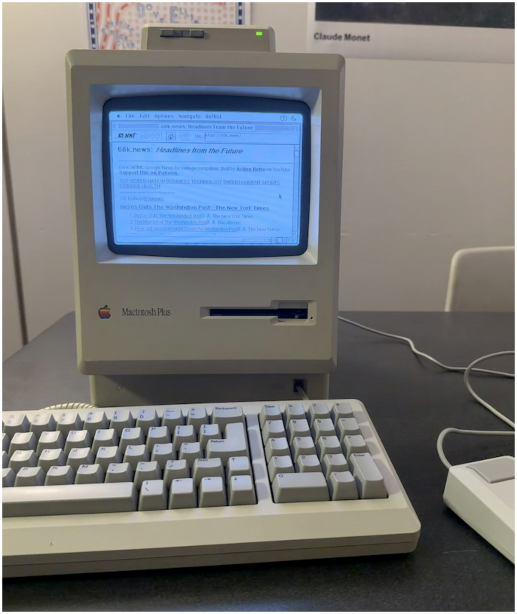

Teaching an Old Dog New Tricks
In the winter of 2025, I was going down another EBay rabbit hole for something I probably shouldn’t spend my money on. I’ve done this many times, and it’s yielded all kinds of results – some better, some much worse. But this time what came out of it was a Macintosh Plus from 1986 and the many adventures that came with it: learning about Macintosh System 6/7, BlueSCSI, MacTraps, dare I say the C programming language, and much, much, more...

My buddy Nick up to no goodAfter getting all the accessories such as a mouse, keyboard, cables, and a few floppies to play around with, I started to have an idea about what I wanted to do with this awesome retro machine – aside from playing around with MacWrite and MacPaint. I wanted to get this computer on the internet!
This wouldn’t be easy, however. The first step was finding a way to get data in and out of the computer other than the miserably slow F l o p p y D r i v e s I’d been using up to that point. It’s interesting that in this era, often times the main bottleneck was NOT the CPU speed, but rather the read/write speed from storage. In fact, once I got it hooked up to modern SD cards over floppies, the computer ran at least an order of magnitude faster! This is because the memory is teeny teeny tiny – just one little megabyte on the whole computer! For context, a single photo taken on a modern smartphone is ~3 megabytes. This means that much of the information the computer needs can’t fit in memory, so it has to read from storage. This results in spinning the Floppy Drive and reading each bit, bit by bit (pun acknowledged), which is incomparably slower than reading it off of the memory chips.
The Motorola 68000 processor that powers the Mac Plus was actually fast for the time – as it needed to be to render the beautiful User Interface (thank you, Susan Kare).
I used two devices to get my Mac interfacing with SD cards, which let me download software online and load it onto the Plus in minutes. These were the FloppyEMU and the BlueSCSI. The EMU plugs into the port that reads Floppy Drives, and tricks the Mac into thinking it’s talking to one. With this little device I can download and run pretty much any software I want that was made for the Macintosh. Online repositories like Macintosh Garden make it easy to download the files I need, and then it’s just a matter of loading them onto the SD card and plugging it all in!

The FloppyEMU hooked up to the MacAs fun as this was playing old games and running old softwares, this device was limited in a couple ways. For one thing, the data transfer speed is a ghastly 63 KILOBYTES a second, and it also won’t get me on the internet. For that I’d need the BlueSCSI v2 with it’s killer WiFi/DaynaPORT emulation feature – which communicates at a comparatively speedy 320 KB/s.

The BlueSCSI in all its gloryThis thing can act as 8 different hard drives at once, letting me store volumes of data on the Mac that would have been unthinkable in 1986. The other thing it can do is emulate a DaynaPORT SCSI to Ethernet device. This was an external device that would plug in to the Mac’s SCSI port which would allow you to connect an Ethernet cable to your Mac. The BlueSCSI takes this a step further by then taking that (emulated) Ethernet connection and putting it over WiFi. So you’re doing WiFi->Ethernet->DaynaPORT->SCSI->Macintosh Plus. All emulated by one device, that’s also storing all your files! Yeah, this one was worth the ~$100 price tag.
Now that I had the hardware all set up to do this, there was another hurdle. Remember that teeny weeny amount of memory the Mac had? 1 single megabyte? Well, that’s a problem too. All the software that came out to do things with the internet like web browsers were made for computers that were also made for the internet. This means that my 1986 Mac is too old even for 90s software! So, a memory expansion was in order. What I didn’t expect was that doing this would require puting my life on the line. That’s why I got Nick to do it.
Once I got the BlueSCSI up and running it was only a matter of installing the right drivers and other software to get it all running, which was not overly challenging. After teaching my Mac how to do networking over TCP/IP (the names of the specific protocols with which I’d talk to the internet), it was time to connect to a website! Powered by the ancient MacWeb browser, here it is, a 1986 Macintosh Plus browsing the modern web, 40 years later and slow as hell!

Voila!